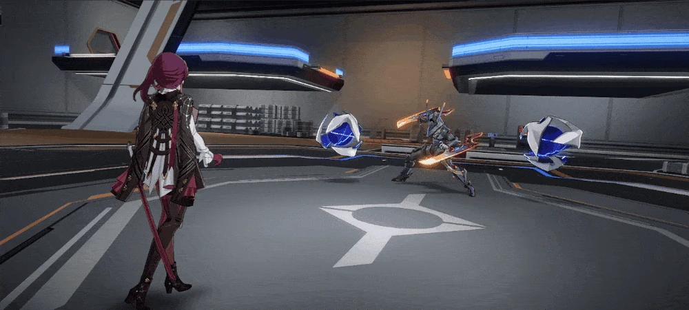

BASIC ATTACK: Beneficent Lotus
Uses a 2-hit attack and deals Imaginary DMG equal to 50–110% of Dan Heng • Imbibitor Lunae's ATK to a single enemy target.
BASIC ATTACK - ENHANCE 1: Transcendence
Uses a 3-hit attack and deals Imaginary DMG equal to 130%–286% of Dan Heng • Imbibitor Lunae's ATK to a single enemy target.
BASIC ATTACK - ENHANCE 2: Divine Spear
Uses a 5-hit attack and deals Imaginary DMG equal to 190%—418% of Dan Heng • Imbibitor Lunae's ATK to a single enemy target. From the fourth hit onward, simultaneously deals Imaginary DMG equal to 30%—66% of Dan Heng • Imbibitor Lunae's ATK to adjacent targets.
BASIC ATTACK - ENHANCE 3: Fulgurant Leap
Uses a 7-hit attack and deals Imaginary DMG equal to 250%–550% of Dan Heng • Imbibitor Lunae's ATK to a single enemy target. From the fourth hit onward, simultaneously deal Imaginary DMG equal to 90%–198% of Dan Heng • Imbibitor Lunae's ATK to adjacent targets..
 SKILL: Dracore Libre
SKILL: Dracore Libre
Enhances Basic ATK. Enhancements may be applied up to 3 times consecutively. Using this ability does not consume Skill Points and is not considered as using a Skill.
Enhanced once, Beneficent Lotus becomes Transcendence.
Enhanced twice, Beneficent Lotus becomes Divine Spear.
Enhanced thrice, Beneficent Lotus becomes Fulgurant Leap.
When using Divine Spear or Fulgurant Leap, starting from the fourth hit, 1 stack of Outroar is gained before every hit. Each stack of Outroar increases Dan Heng • Imbibitor Lunae's CRIT DMG by 6%–13.2%, for a max of 4 stacks. These stacks last until the end of his turn.
ULTIMATE: Azure's Aqua Ablutes All
Uses a 3-hit attack and deals Imaginary DMG equal to 180%–324% of Dan Heng • Imbibitor Lunae's ATK to a single enemy target. At the same time, deals Imaginary DMG equal to 84%–151.2% of Dan Heng • Imbibitor Lunae's ATK to adjacent targets. Then, obtains 2 Squama Sacrosancta.
It's possible to hold up to 3 Squama Sacrosancta, which can be used to offset Dan Heng • Imbibitor Lunae's consumption of skill points. Consuming Squama Sacrosancta is considered equivalent to consuming skill points.
TALENT: Rightegous Heart
After each hit dealt during an attack, Dan Heng • Imbibitor Lunae gains 1 stack of Righteous Heart, increasing his DMG by 5%–11%. This effect can stack up to 6 times, lasting until the end of his turn.
TECHNIQUE: Heaven-Quelling Prismadrakon
After using his Technique, Dan Heng • Imbibitor Lunae enters the Leaping Dragon state for 20 seconds. While in the Leaping Dragon state, using his attack enables him to move forward rapidly for a set distance, attacking all enemies he touches and blocking all incoming attacks. After entering combat via attacking enemies in the Leaping Dragon state, Dan Heng • Imbibitor Lunae deals Imaginary DMG equal to 120% of his ATK to all enemies, and gains 1 Squama Sacrosancta.
Kafka

Basic Attack

Skill
Ultimate
BASIC ATTACK: Midnight Tumult
Deals Lightning DMG equal to 50%–110% of Kafka's ATK to a single enemy.
SKILL: Caressing Moonlight
Deals Lightning DMG equal to 80%–176% of Kafka's ATK to a target enemy and Lightning DMG equal to 30%–66% of Kafka's ATK to enemies adjacent to it.
If the target enemy is currently receiving DoT, all DoTs currently placed on that enemy immediately produce DMG equal to 60%–78% of their Original DMG .
ULTIMATE: Twilight Trill
Deals Lightning DMG equal to 48%–86.4% of Kafka's ATK to all enemies, with a 100% base chance for enemies hit to become Shocked and immediately take DMG from their current Shock state, equal to 80%–104% of its Original DMG . Shock lasts for 2 turns.
While Shocked, enemies receive Lightning DoT equal to 116%–318.275% of Kafka's ATK at the beginning of each turn.
TALENT: Gentle But Cruel
After an ally of Kafka's uses Basic ATK on an enemy target, Kafka immediately launches 1 follow-up attack and deals Lightning DMG equal to 42%–159.6% of her ATK to that target, with a 100% base chance to inflict Shock equivalent to that applied by her Ultimate to the attacked enemy target for 2 turns. This effect can only be triggered 1 time per turn.
TECHNIQUE: Mercy is not Forgiveness
Immediately attacks all enemies within a set range. After entering battle, deals Lightning DMG equal to 50% of Kafka's ATK to all enemies, with a 100% base chance to inflict Shock equivalent to that applied by her Ultimate on every enemy target for 2 turn(s).


 The Destruction
The Destruction
 Imaginary
Imaginary
 The Nihility
The Nihility
 Lightning
Lightning